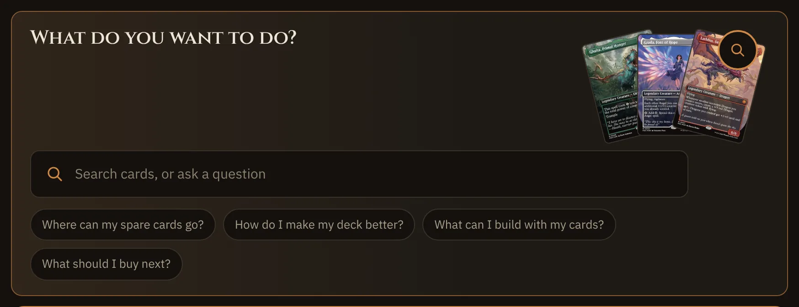
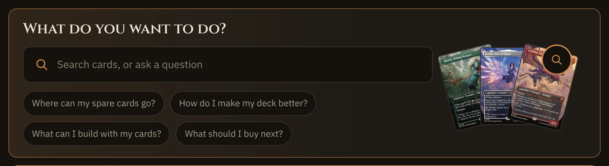
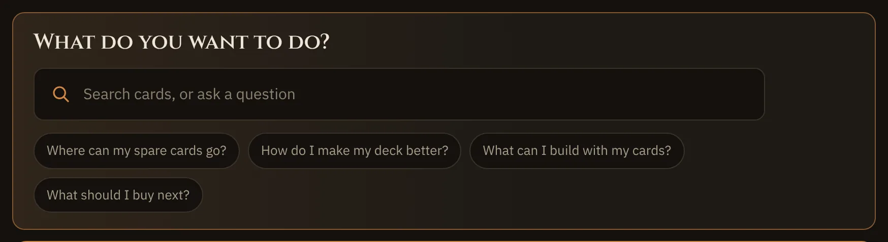
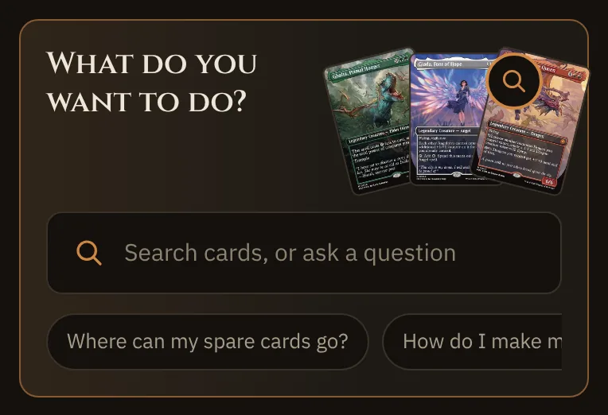
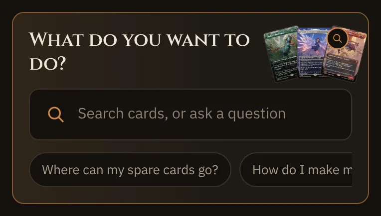
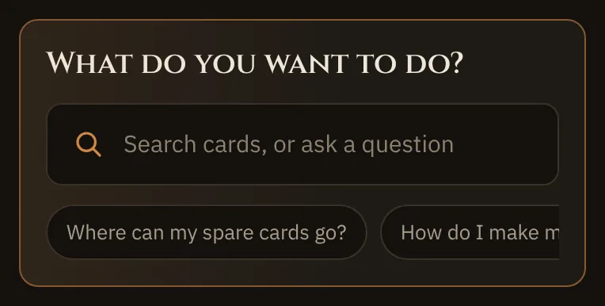

The shipped panel with the reader's three most recent cards in its fan. Today against two options, at 1300 and 390. The welcome credits foot is hidden in these crops; it is unchanged.
21 · Home's search panel without the dead space (R13)
Q23 · Where does the fan go?
Recommended: A. The field sits right under the title and the panel keeps the reader's own cards, which is what makes it look like theirs.

Today
The fan sets the title row's height.

A · Fan beside the field
Title, then the field at once; the fan on the right.

B · No fan
The plainest and shortest.

Today
The fan is taller than the two-line title.

A · Smaller fan
62% beside the title.

B · No fan
Title on one line.